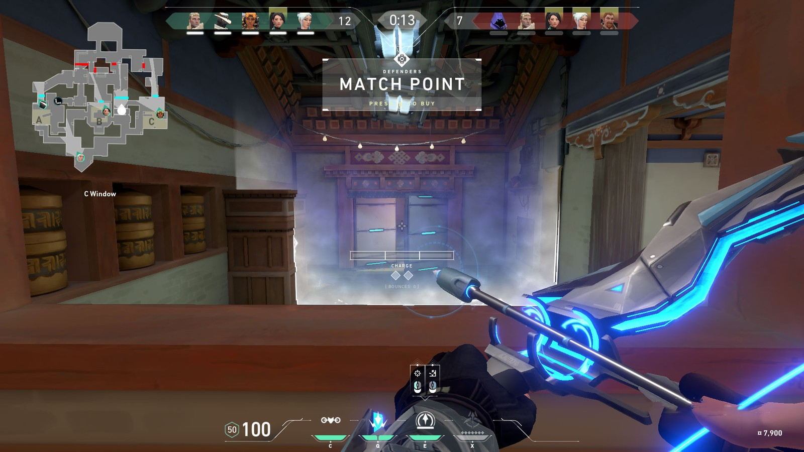
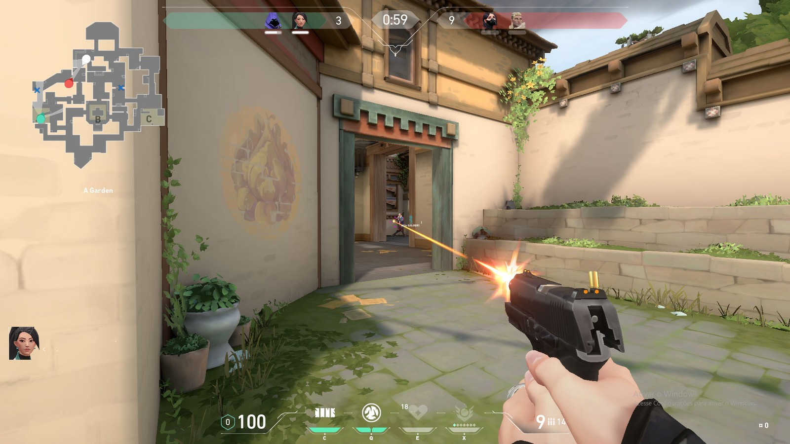

Valorant lembra "overwatch" mas é parecido com "CS-Go"
Primeiro grande game da Riot desde ‘League of Legends’ começou testes fechados no Brasil nesta terça-feira (5).
Quando a Riot anunciou o desenvolvimento de "Valorant", seu novo jogo de tiro em primeira pessoa com heróis, foi difícil não lembrar de "Overwatch", game que deu origem a esse subgênero. Depois de enfrentar algumas partidas, no entanto, é fácil perceber que ele na verdade parece muito mais com um "Counter-Strike".
O novo grande projeto da desenvolvedora, responsável por "League of Legends", deu início a seu período de testes fechados no Brasil nesta terça-feira (5) com mais foco na tática, e menos nos poderes.
Leva um tempo para pegar a estratégia e o ritmo do jogo, principalmente para quem ainda tem o game da Blizzard em mente. Sair para o confronto direto é uma boa maneira de morrer rapidamente e assistir ao resto do time tentar vencer a rodada.
Depois de algumas mortes em poucos segundos fica claro que o caminho para a vitória em "Valorant" é bem diferente.
Poder estratégico
Assim, as partidas são muito menos caóticas do que no jogo da Blizzard. Elas podem até parecer menos divertidas para quem assiste, algo que pode ser determinante para o futuro de "Valorant" em uma comunidade que gosta cada vez mais de ver transmissões de seus jogos favoritos, mas tornam a vitória ainda mais gratificante.
Ao mesmo tempo, mesmo com a limitação são as habilidades que levam o game além de mais um exemplar de tiro tático. Afinal, para isso já existem dezenas — como o já mencionado "Counter-Strike" ou "Rainbow Six Siege".
Com "Valorant", a Riot tenta provar que consegue seguir em frente, depois de anos dedicada a "LoL", um dos jogos mais populares do mundo. Pelo menos por enquanto, ela está no caminho certo.